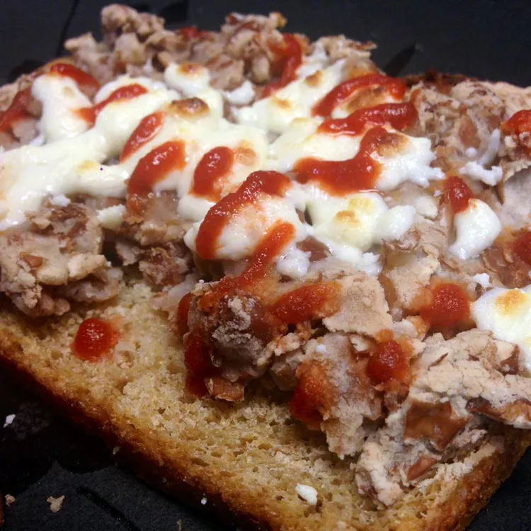

Molletes
Inicio

Un mollete con frijoles refritos, queso oaxaca gratinado y salsa roja.
Su elaboracion es muy sencilla, partimos el bolillo por la mitad, embarramos una cama de frijoles previamente
refritos en manteca, exparsimos queso oaxaca sobre el y dejamos que se gratine en el horno, finalmente coronamos
con una deliciosa salsa roja al gusto.
Ingredientes
- Bolillo
- Frijoles
- Manteca
- Queso Oaxaca
- Salsa de Jitomate
- Partimos el bolillo
- Untamos los frijoles sobre el bolillo
- Exparsimos el queso oaxaca sobre el mollete
- Llevamos al horno para que se gratine el queso
- Colocamos salsa de jitomate al gusto